Job 18.5 screens
The lock-screen comparison is the approved HTML reference (rendered in Chromium with the
bundled Fredoka/Nunito fonts and the real lockup-ondark asset) next to the real
GDI+ overlay renderer used by the Windows Helper, at 1600×900 and 1620×1080 in English and
es-MX. The kid view is the Avalonia My OpControl window with demo data at 1040×700, both themes,
plus a 1.5× layout render. The lock messaging panel is the real WinForms panel with demo data.
Lock screen: ref vs real overlay
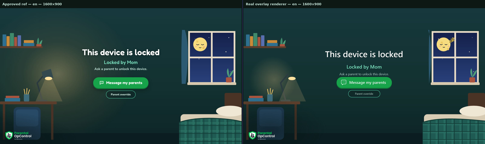
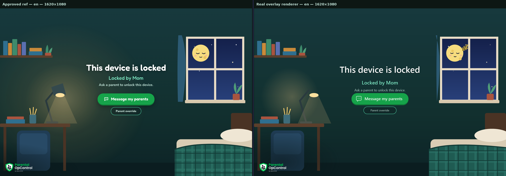
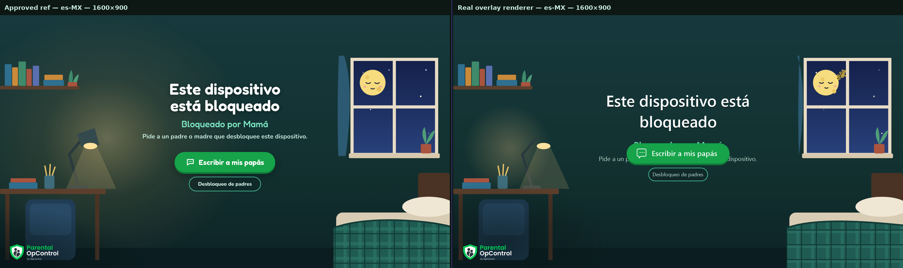
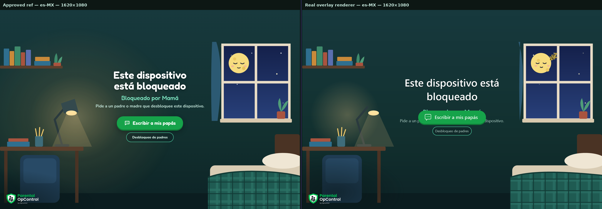
Lock screen overlay (real renderer)
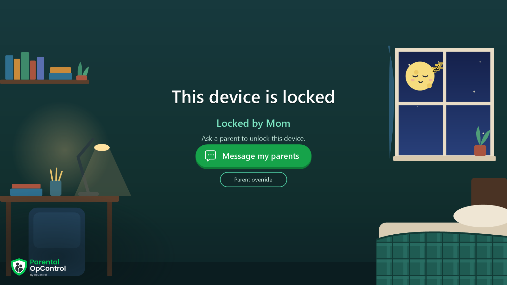
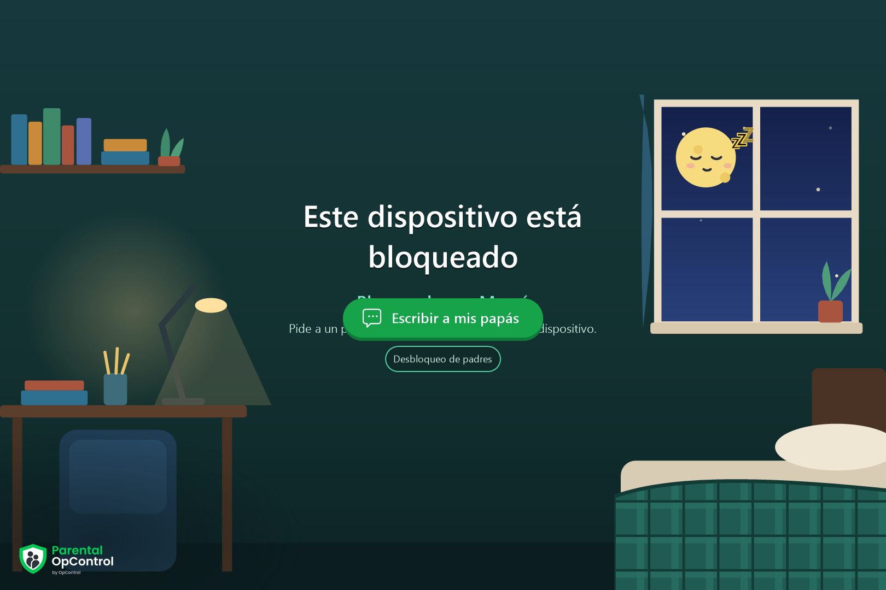
Lock screen messaging panel (owned by the overlay)
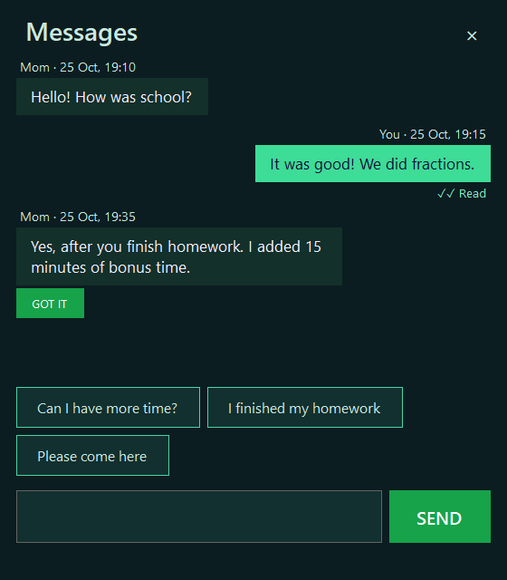
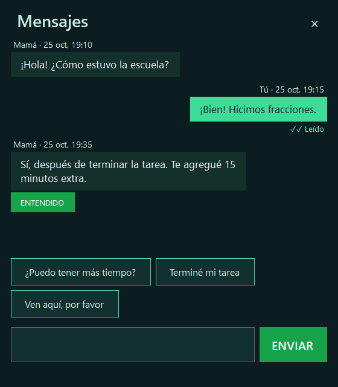
My OpControl at 1040×700 (demo data)
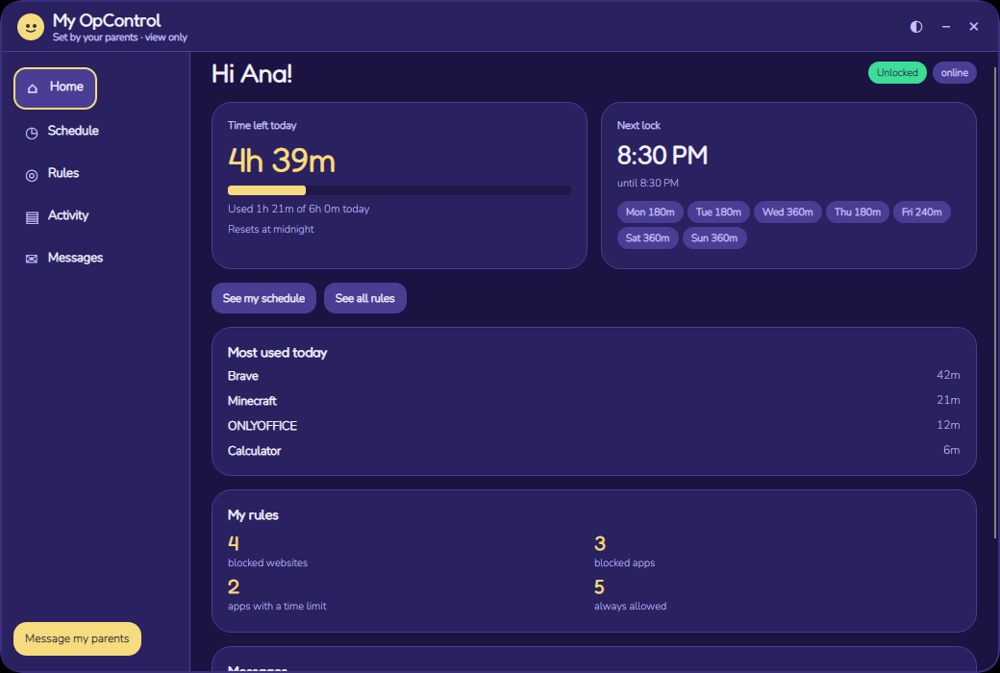
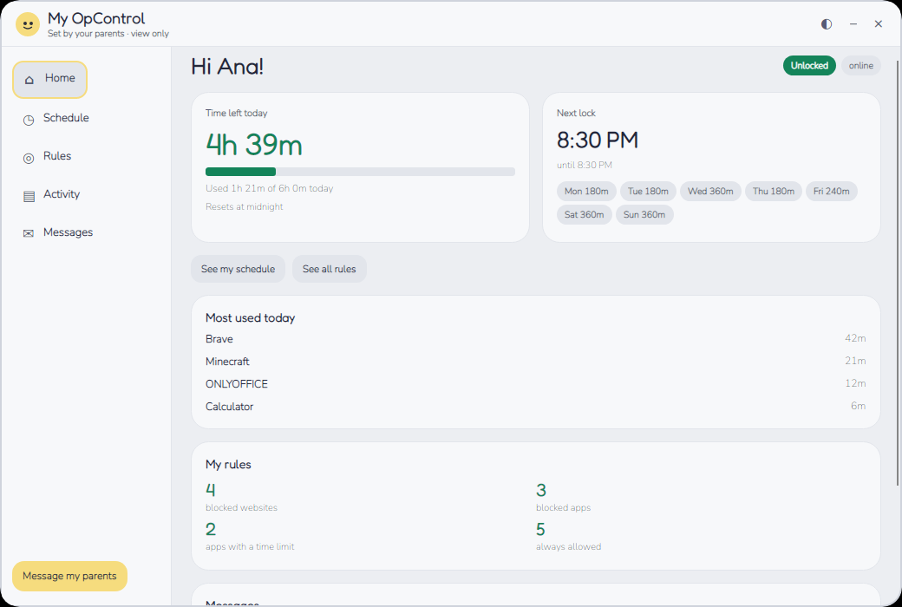
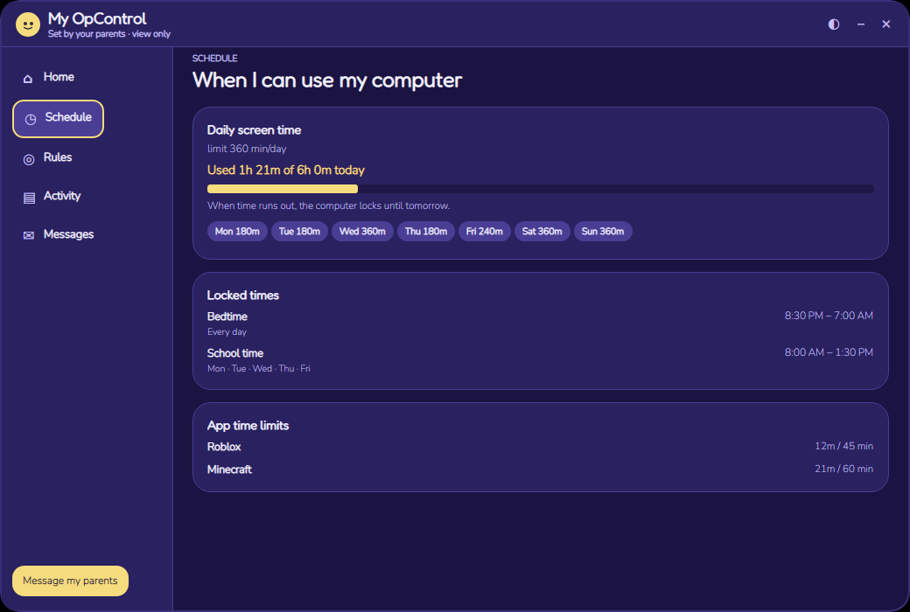
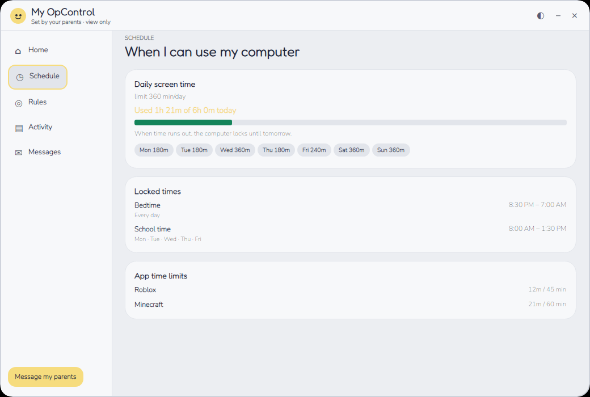
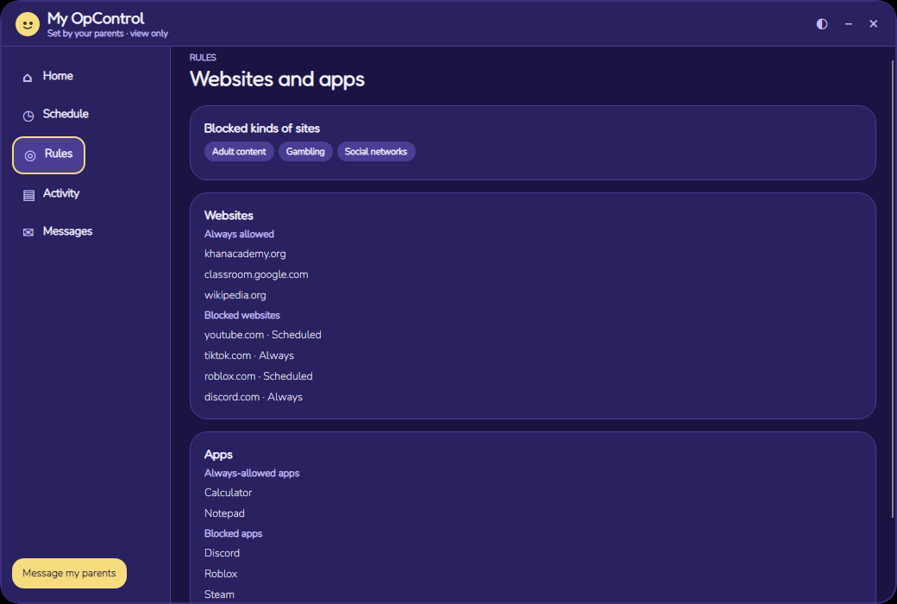
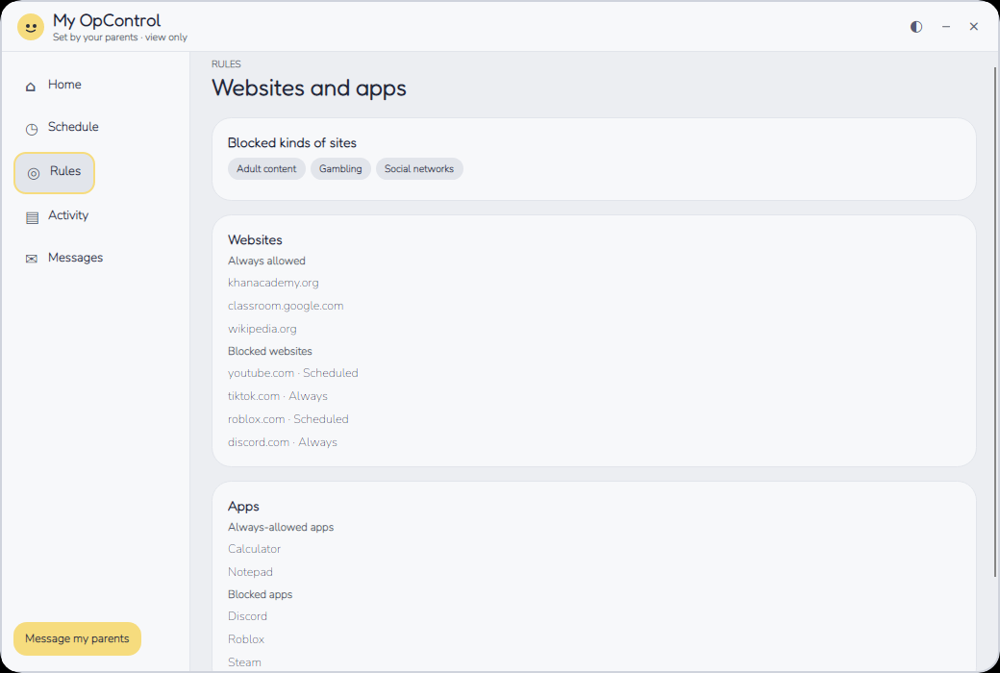
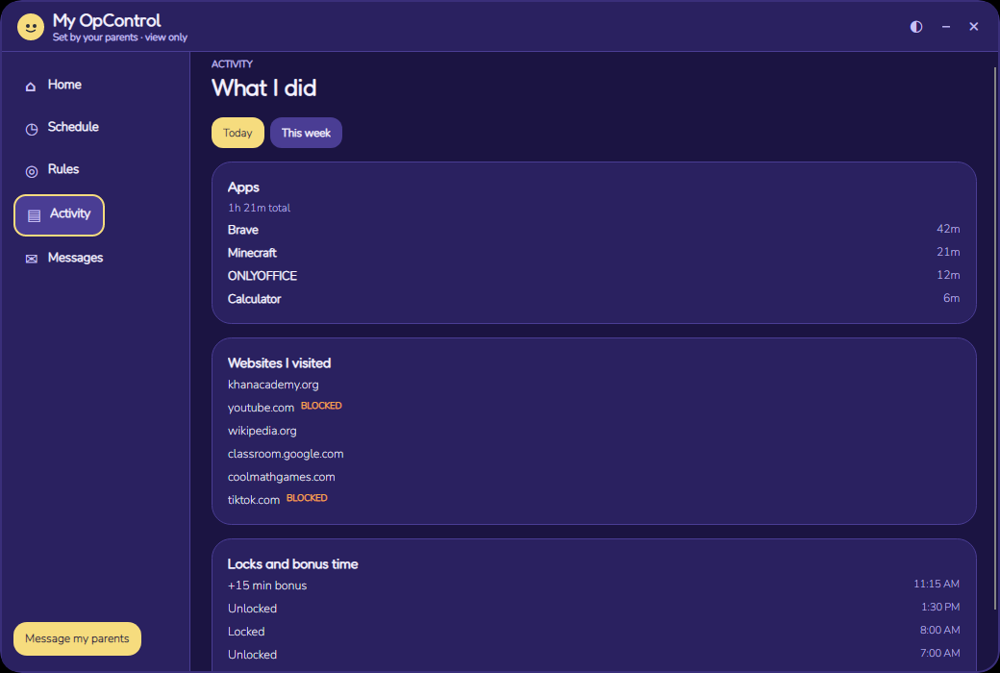
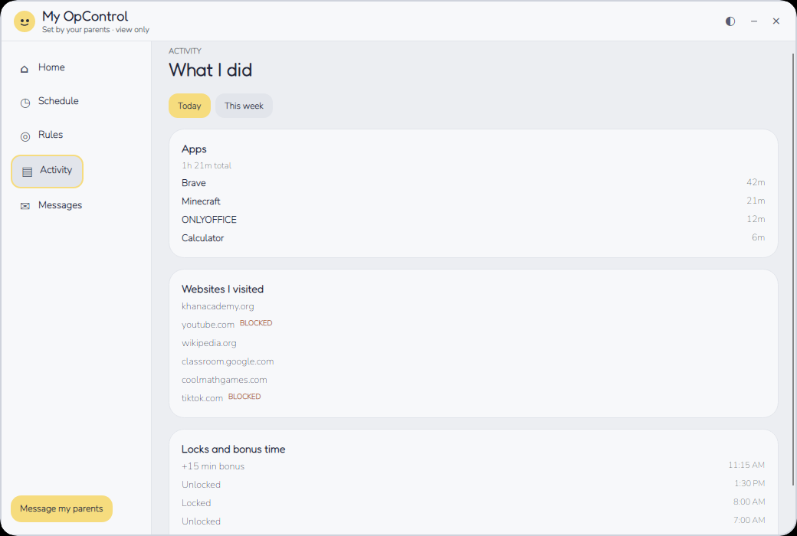
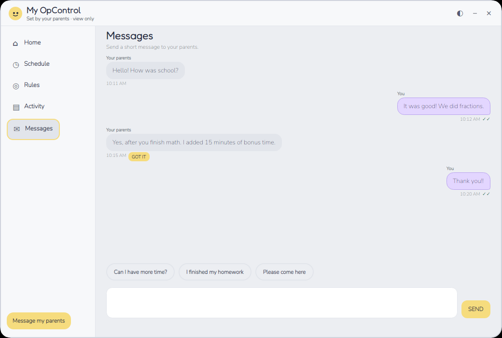
My OpControl at 1.5× layout
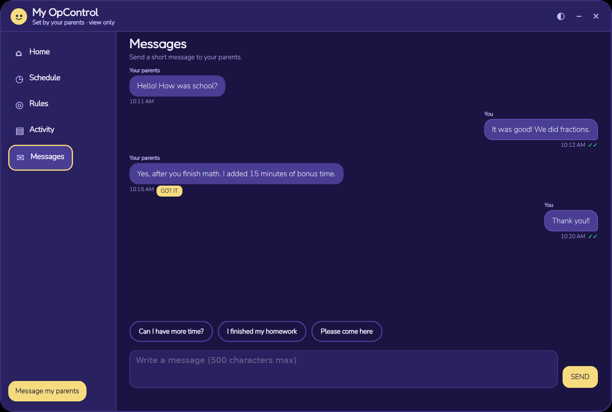
Remaining visual differences (listed, not blocking)
- The curtain, lamp arm/shade, chair and plaid blanket are simplified GDI+ shapes; the reference has softer, layered vector shapes.
- The overlay draws Fredoka through GDI+ from the bundled static font. The web reference uses 500/600/700/800 web-font weights, so letter shapes and weights differ by a pixel or two.
- The Z's use a GDI+ outline approximation and are slightly smaller than the reference's outlined letters; the moon position and size match the approved upper-left pane.
- The reference has six twinkling stars at fixed points; the overlay animates the same six points but with a slightly different twinkle curve.
- The lock messages panel is a WinForms panel styled to match the lock screen, not the Avalonia kid window. It follows the same conversation and status, but its rounded corners and type are OS-drawn.
- My OpControl Home still uses the existing two-card layout and progress bar rather than the reference's three-column ring card. Job 18.5 fixed the requested spacing, card corners, title-bar theme button and subtitle; a full Home redesign was out of scope.